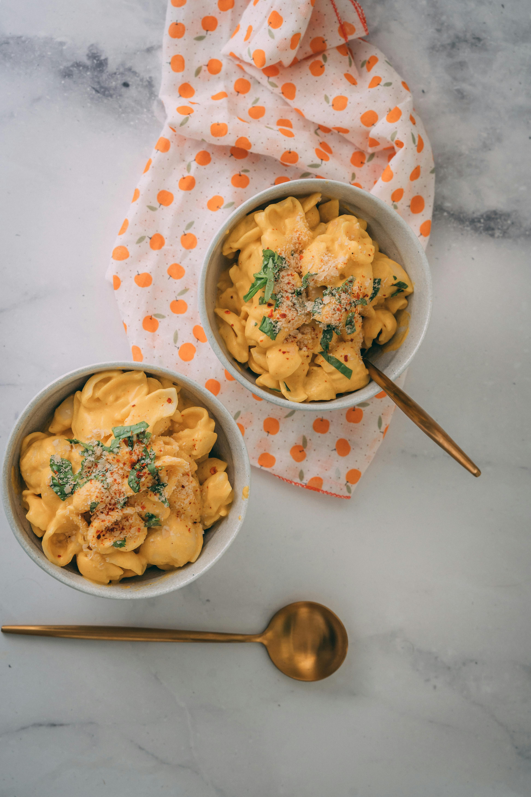
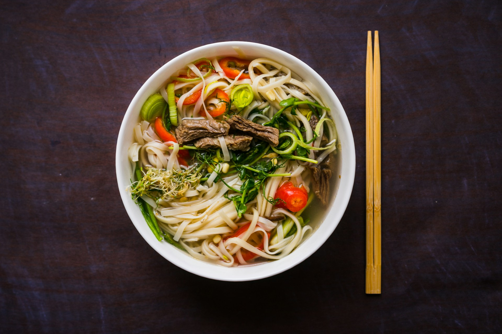
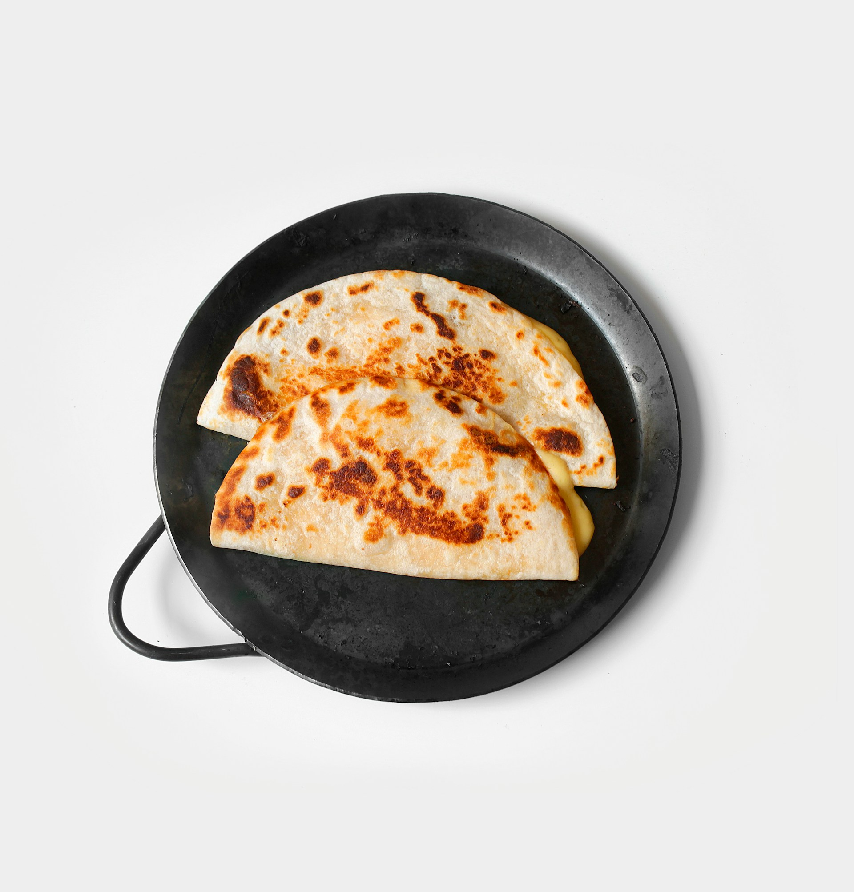

BUDGET BITES
Cheap and easy!
Pick a few, or all of them, and enjoy a week of meals kind to your body and your wallet.

Tofu and Broccoli Stew - 20 min


Chili Mac and Cheese - 20 min

Crispy Fish with Potato Wedges - 40 min

Beef Ramen - 25 min

Chickpea Curry - 20 min

Quesadillas - 10 min